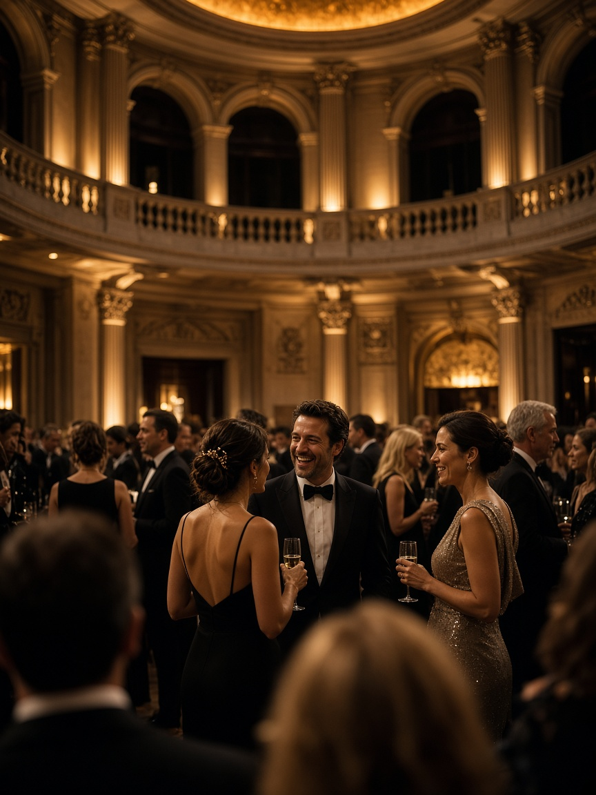
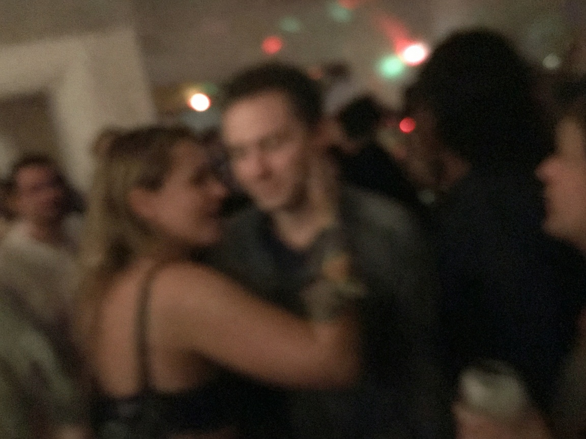

Toi
Photo & clips
- Ton matos photo et vidéo, tel quel
- Le regard : ce qui mérite d’aller à l’écran
- L’envoi Wi‑Fi des bons plans, une fois réglé
Pendant la soirée, les invités voient la soirée. Tes photos et clips courts arrivent sur les écrans une minute après, pas le lendemain dans un aftermovie.

Logo de l’event Photo · captée il y a 48 sCe que voient les invités sur l’écran principal.
Quelqu’un lève les yeux vers l’écran et se reconnaît — une photo nette, ou un clip de quelques secondes tourné il y a deux minutes. Il le montre à ses amis, ils se refont filmer devant le mur.
C’est ça le produit : photo + contenus courts, choisis, qui reviennent dans la salle pendant que la soirée se passe. Pas un mur Instagram en vrac, pas une régie TV à six caméras.
Photo ou clip court : du shoot à l’écran, environ une minute et demie. Tout passe par un Wi‑Fi à nous, pas celui du lieu.
Photo ou micro-réel (quelques secondes), avec ton matos habituel.
Tu envoies seulement ce qui vaut l’écran. Le reste reste sur ta carte.
Envoi Wi‑Fi vers la régie (dossier partagé), sans cloud.
Netteté, exposition, doublons, stabilité. Quelques secondes.
Vers tous les écrans connectés — TV, tablette, stick — en même temps.
Tu fais le premier tri à l’œil — photo comme clip. L’IA fait le second, pour attraper ce qui t’a échappé dans le feu de l’action. Personne n’a besoin de valider chaque fichier à la main.
Photo nette, bien exposée. Elle entre dans la boucle tout de suite.
Clip court d’ambiance : quelques secondes de mouvement dans la boucle.

Flou, trop sombre ou instable. Il ne passe pas, et le mur continue sans lui.
Le fichier n’est ni diffusé ni jeté : il part dans un dossier à part. Si on a deux minutes, on y jette un œil et on repêche ce qui mérite. Le flux vers l’écran ne s’arrête jamais pour attendre une décision.
Toi
Moi
Une fois validé, le contenu n’est pas collé sur un seul HDMI. Il part vers tous les players du lieu en même temps — autant d’écrans que la soirée en a besoin.
Branché derrière chaque TV / moniteur. App player dédiée : boucle live, logo event, sync avec la régie.
App iPad pour un mur mobile, un hall, un coin VIP — même flux que les grands écrans.
Un, trois ou dix écrans : la régie pousse le même contenu partout. On ajoute un stick ou une tablette, ça se branche au flux.
Capture, réseau, régie, players. Ça tient dans une valise et ça s’installe en une heure.
Du déclenchement à l’écran : tout reste en local sur le Wi‑Fi dédié. Entre le tri et la diffusion, on passe les extras — qualité et branding — avant que ça parte aux players.
GH6 / S1 / Osmo — photo ou clip court sélectionné.
Envoi vers le partage Samba du Pi, sans cloud.
Écriture sur le SSD (/inbox), pas sur la SD système.
IA + règles → /approved ou /hold.
Netteté, expo légère, balance, filtres / look event — automatiques, rapides.
Logo coin, bumper, cadre, écran d’attente — charte de la soirée.
Push du fichier prêt vers tous les devices connectés.
Boucle live sur un ou plusieurs écrans, en sync.
Chaîne type : boîtier → Samba (Pi) → SSD → tri → extras (netteté / filtres) → branding → Fire TV / iPad → écran. Les extras et le branding sont le même pipeline pour tous les players : on ne refait pas le look écran par écran.
Soirée test, une zone écran. Toi tu arrives avec ta captation ; la valise régie apporte le reste.
Déjà là — on ne rachète rien.
À monter une fois — réseau, inbox, diffusion.
Ensuite, si ça marche : 2ᵉ / 3ᵉ Stick, iPad mur mobile, spare Pi. Option souvenir : même routeur avec SIM 4G + serveur web pour Apple Pay et download. Le soir 1, un GH6 + un Pi + un Stick suffisent à prouver le mur — la boutique vient après.
Un QR sur l’écran : l’invité paie en Apple Pay et télécharge sa photo / son clip. Le mur live reste sur le réseau local ; seul un petit uplink 4G sert au paiement et au serveur de téléchargement.
Pour la captation et la diffusion. Pas besoin d’internet. GH6, Pi, SSD, Fire TV / iPad restent isolés et stables.
Le routeur ouvre un uplink 4G (SIM data) uniquement pour l’option souvenir : page de paiement Apple Pay en ligne, puis téléchargement du média.
Apple Pay a besoin d’internet — impossible 100 % offline. En séparant LAN mur et uplink 4G souvenir, on garde un live fiable, et on active l’achat seulement quand on veut. Sans SIM : le mur marche pareil, sans la boutique.
Photos et clips sont déjà triés et habillés. Ce qui prend d’habitude une semaine devient rapide.
Une minute de montage diffusée avant la fermeture. Les gens repartent en ayant revu leur soirée.
Stories, posts et verticals prêts le lendemain, avec la même charte que le mur.
Les meilleurs plans — photo et vidéo — sont déjà repérés. Le montage part d’une sélection, pas de 400 Go de rushs.
Tes boîtiers, ma régie, un Fire TV Stick derrière un grand écran. On voit si la magie prend, et on construit à partir de là.